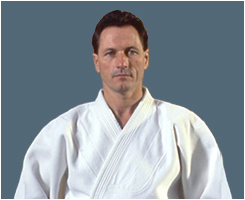
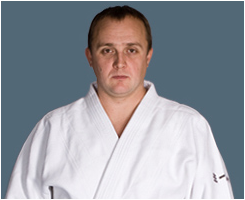
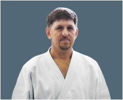

О школе
О боевых искусствах в нашей школе
Боевые искусства в полном смысле этого слова, включая искусства невооруженной борьбы и искусства борьбы с оружием, стремятся к одной вершине – совершенству в постижении истины, полному слиянию тела, души и разума. Неважно, достигается ли эта цель во время контактного спарринга или во время стрельбы из лука, в ходе борьбы на татами или в поединке с
оружием.
Истина одна, а путей ее постижения много: изучения наук, физические упражнения, медитация. Каким бы из этих путей мы не шли, только тренируя в комплексе тело, психику и разум, мы приближаемся к познанию истины, становимся воинами по духу. Истинный воин побеждает до схватки!
Боевые искусства – это специальные комплексы техник и приемов для самозащиты. Владение каким-либо единоборством считается лучшим способом выйти победителем в схватке с оппонентом.
Боевые искусства подразделяются на направления, виды, стили и школы. Существуют боевые искусства, как с большой историей, так и молодые. Кроме того, различные стили боевых искусств можно разделить на внешние и внутренние, различия которых заключаются в соотношении тренировки тела и духа. Реальный бой, это бой руками и ногами, различными предметами, оказавшимися под рукой, а также холодным оружием. В отличие от спортивных единоборств, где целью поединка является демонстрация тактико-технического превосходства над соперником в рамках определенных правил, цель реального боя заключается в полной нейтрализации противника путем обездвиживания, причинения ему серьезных травм или уничтожения. Понятно, что никаких правил в реальном бою нет и быть не может. Это обстоятельство надо специально подчеркнуть, т.к. обучение и следование одной технике на практике может оказаться неприменимо. Данный посыл и послужил выбором нашей школы в качестве основного вида единоборства Айкидо.
Айкидо объединяет в себе эффективные техники работы с противником из различных боевых искусств, учитываются особенности атак в виде захватов, ударов руками и ногами, использование холодного оружия и подручных средств. Основной акцент в освоении айкидо делается на вхождение телом и духом в гармонию с противником, что и даёт возможность развернуть агрессию противника против него самого. Именно этот принцип и даёт возможность не учитывать пол, возраст и весовые категории.
Используемые в айкидо техники одинаково эффективны для всех и позволяют найти гармонию между телом, духом и окружающим миром в любых обстоятельствах, будь то нападение хулигана или сложные деловые переговоры.
Гармония сильного духа и здорового развитого тела – основа успеха во всех начинаниях.
Обучение
На каждой тренировке в школе Кисенсин ученики изучают новые и повторяют ранее изученные техники, их различные варианты под руководством Сенсея. В Айкидо существует большой набор вариантов техник для достижения одной и той-же цели, что позволяет ученикам найти наиболее эффективные именно для него варианты. В то-же время существует достаточно жёсткая система аттестации, требующая учеников знать и уметь выполнять базовые техники. В не зависимости от целей занятий (спортивные достижения или личностное развитие) все ученики обязаны выполнять правила поведения в додзё.
Памятка для родителей
Воспитание личности — это долгий многолетний процесс, результат достигается постоянным (день за днем), регулярным пестованием. Это не только задача педагога, но также и задача родителей, действующих целенаправленно, совместно и согласованно друг с другом.
Строго соблюдайте режим дня, даже в выходные дни (ребёнок должен высыпаться)! Оградите ребёнка от других нагрузок: компьютерных игр, многочасовых просмотров телепередач, посещения дополнительных кружков и секций, походов в гости. Не ждите от своего спортсмена быстрых результатов. Не критикуйте ребёнка: ВСЕМУ СВОЁ ВРЕМЯ. Если Ваш малыш жалуется на то, что он устал, посочувствуйте ему. Дайте понять ребёнку, что Вы понимаете как ему трудно, выслушайте его.
При неудачах не критикуйте ребёнка, напротив, вселяйте уверенность в своих силах: «В следующий раз у тебя обязательно получится!». Почаще говорите ему : «Ты молодец!», «Я горжусь тобой!» . Уверенному в себе человеку не придёт в голову самоутверждаться, унижая других.
Отзывайтесь положительно об окружающих людях. Поощряйте положительные отзывы о других, высказываемые Вашим ребенком.
Никогда не обсуждайте личность другого ребёнка в присутствии своего ребёнка. Ни в коем случае не сравнивайте своего ребёнка с другими, более успешными, на Ваш взгляд, юными спортсменами! Помните, что сравнивать ребёнка можно только с ним самим.
Не обсуждайте личность тренера или его действия в присутствии юного спортсмена, не вмешивайтесь в воспитательный процесс. Поддерживайте авторитет тренера-учителя.
Не торопитесь вмешиваться в выяснение отношений вашего ребёнка с мальчиками из команды (кроме исключительных случаев). Помните, Ваш ребёнок не получит ценный опыт общения, если Вы всё сделаете за него.
Всё время прививайте ребёнку навыки терпимости и понимания других людей.
Ни в коем случае нельзя произносить слово «не повезло», поскольку ребенок начинает искать причины неудач не в себе (и тем самым больше работать), а во внешних обстоятельствах, а это — залог дальнейших проигрышей.
Важно помнить, что адаптационный период у ребёнка может растянуться не на 1 год.
Преследуя цель вырастить настоящего спортсмена, не забывайте, что психологическое благополучие, физическое здоровье ребёнка дороже всех медалей и побед. Ваш ребёнок, достигнув вершин спортивного мастерства, в первую очередь должен быть здоров!
Вы поступите правильно, если покормите ребенка за час-полтора перед тренировкой — и то не обильно.
После тренировки вы можете предложить ребенку какой-нибудь из фруктовых соков — можно послаще; легкоусвояемый фруктовый сахар быстро восстановит растраченную энергию в организме. Только помните, что сок, который вы даете ребенку сразу после тренировки, не должен быть холодным. Ребенок разгорячен, и от холодного сока у него может заболеть горло
Родители должны понимать, что, ребенок занимаясь Айкидо или другими видами восточных единоборств, преобретает опасную силу. Применение приемов борьбы — это больше вопрос нравственности, чем законности. Как можно определить: какой был применен прием во время драки? В какой степени? Все зависит от мотивации — если прием используется для самозащиты, это допустимо. Человек, который занимается борьбой, никогда не нападает первым — у него другая философия. В любом случае, на наших тренировках жестко пресекается превышение ударов и категорически не допускается, чтобы кто-то кого-то калечил или травмировал
Если родители любят прогулки на свежем воздухе, если они ежедневно занимаются утренней зарядкой и, по возможности, спортивными играми, строго соблюдают гигиенические правила, то естественно, они будут стремиться и детей своих вырастить физически крепкими и нравственно здоровыми. Ребенок невольно старается походить на своих родителей.
Личный пример родителей, совместные физкультурные занятия, здоровый образ жизни – главные составляющие успеха физического воспитания в семье.
Главным основанием родительского авторитета только и может быть жизнь и работа родителей, их гражданское лицо, их поведение. Семья есть большое и ответственное дело, родители руководят этим делом и отвечают за него перед обществом, перед своим счастьем и перед жизнью детей.
Айкифитнес
Айкифитнес – это фитнес-программа, основанная на выполнении приемов восточных единоборств (Айкидо, Карате, Дзюдо и др.), элементов аэробики, силовых упражнений и растяжки. В основе Айкифитнеса лежат упражнения на растяжение, управление центром (равновесие) и ударные техники, выполняемые в аэробном ритме под музыкальным сопровождением.
Занятия Айкифитнесом повышают мышечный тонус и эффективно сжигают лишние килограммы, в течении одного часа занятия Айкифитнесом в среднем тратится 700-800 килокалорий, что соответствует бегу на дистанцию 10 километров, в результате чего тело приобретает неповторимый мышечный рельеф, упругость и красоту, а систематические занятия снижают уровень «плохого» холестерина в крови и поспособствуют активной профилактике атеросклероза и заболеваний сердца.
Растяжения, удары руками, ногами и другие упражнения, используемые на тренировках максимально естественны и физиологичны, поскольку строение опорно-двигательного аппарата современного человека изначально предопределено эволюционной необходимостью в защите и нападении с целью сохранения и поддержания жизни. В результате регулярных тренировок сформируется так называемый динамический стереотип, что позволит Вашей нервной системе задействовать во время выполнения техник только необходимые мышечные группы и сделает движения более рациональными и эффективными.
Занятия Айкифитнесом как и само Айкидо не предусматривают спаррингов, поэтому бить никого не придется, однако, выполняемые техники максимально соответствуют боевым, их точности уделяется достаточно внимания.
Айкифитнес позволяет достигнуть следующих результатов:
- Занятия позволят Вам сбрасывать по три и более килограмма ежемесячно, не меняя при этом своих пищевых предпочтений и привычек.
- Равномерная тренировка всех мышечных групп способствует формированию правильной осанки и профилактике заболеваний позвоночника, в том числе остеохондроза.
- Упражнения на растяжку, благоприятно сказываются на тонусе мышц, их эластичности, делают опорно-двигательный аппарат более гибким и подвижным, что поможет сохранить ощущение молодости в Ваших движениях.
- Тренируются координация движений и вестибулярный аппарат, что является прекрасной профилактикой травматизма.
- Ваша походка станет уверенной и твердой, и Вы не будете бояться упасть даже на скользком льду или научитесь падать правильно.
- Выполнение ударных техник, имитация поединка помогают найти выход скрытой агрессии, негативным эмоциям, таким образом, занятия Айкифитнесомспособствуют достижению душевного комфорта и предупреждают развитие психологического стресса.
- Ваши движения станут сильными и точными, что, несомненно, может пригодиться для самозащиты.
Каждая тренировка Айкифитнесом обладает мощным эмоциональным зарядом, а сплоченность участников группы во время тренировочного процесса помогают преодолеть усталость, лень, наполняют энергией и энтузиазмом, способствуя более быстрому росту физической подготовки каждого члена группы.
Предлагаем присоединиться к нашей группе и ощутить все удовольствие от занятия Айкифитнесом на себе!
Айкидо для детей
Айкидо – одно из самых изящных современных боевых искусств Японии, созданное в конце 20-х годов Мастером Морихэем Уэсибой, который объединил практические приемы самозащиты искусства фехтования на мечах и копьях, а также других, более древних видов боевых искусств в уникальную систему физического и духовного совершенствования.
Сегодня искусство айкидо имеет несколько направлений. Основным является направление АЙКИДО АЙКИКАЙ, ведущее начало непосредственно от Основателя айкидо и возглавляемое ныне его внуком — Моритэру Уэсибой. Айкидо АЙКИКАЙ успешно развивается более чем в 60 странах мира, а число занимающихся этим искусством уже превысило 1,8 миллиона человек. Айкидо старается поглотить воздействие, а не блокировать его. Основная задача в айкидо – достичь согласованности с движением атакующего, продлить это движение и перенаправить его, полностью контролируя действия атакующего. Регулярная физическая активность укрепляет здоровье и повышает уверенность в своих силах. Движения в упражнениях и техниках айкидо корректируют осанку, снимают напряжение и стресс, позволяя человеку сконцентрироваться на расслаблении и дыхании. Многократно повторяемые движения айкидо дают в результате естественную, спокойную, ненапряженную реакцию на любую ситуацию. В айкидо нет соревнований, так как оно основано на философии отсутствия противоборства. Отсутствие противоборства означает подавление человеческих инстинктов агрессивности и соперничества, направление их по пути согласия и гармонии. Уровень мастерства занимающихся айкидо оценивается специальной комиссией на квалификационных экзаменах, после которых кандидатам присваиваются соответствующие степени Кю и Дан. Технические особенности различных школ айкидо регулярно демонстрируются на фестивалях и показательных выступлениях разного уровня, вплоть до международного.Часто задаваемые вопросы
Можно ли заниматься детям?
Дети, занимающиеся этим видом спорта, после полугода занятий значительно реже болеют простудными заболеваниями. Так как занятия проводятся босиком, дети естественным образом закаливаются и получают массаж биологически активных точек, в большом количестве расположенных на подошвах ног. Разминка айкидо включает в себя элементы самомассажа и постановку правильного дыхания. Из разряда «часто болеющих» переходят со временем в группу детей, не болеющих вовсе. В айкидо большое внимание уделяется «правильным падениям», это позволяет детям избежать травм в повседневной жизни при беге и игре. В обычной повседневной жизни дети становятся менее застенчивыми, легко находят контакт со сверстниками и более старшими людьми, осознанно уходят от конфликтов и уж тем более не решают их силой. Укрепляется дух, появляется уверенность в себе и своих силах.Можно ли заниматься женщинам?
Женщин в айкидо довольно много, гораздо больше чем в других видах восточных единоборств. Причина этого заключается в том, что для занятий айкидо не нужно быть ходячей горой мускулов — занятия ничуть не сложнее (хотя и не менее интересны!) обычных танцев. Занимаясь с нами, Вы улучшите мышечный тонус, разовьёте гибкость, укрепите своё здоровье. Помимо хорошей формы, отличной фигуры и пластики, занятия дадут Вам ощущение защищенности.Эффективно ли айкидо для самозащиты?
Важно понимать, что основатель айкидо умышленно решил превратить свое боевое искусство в нечто иное, нежели самое кровавое боевое искусство на свете, и вполне возможно, что другие боевые искусства более эффективны в военном плане, нежели айкидо. Тем не менее, айкидо имеет вполне эффективное прикладное применение: приемы этой борьбы, позволяющей нейтрализовать нападающего, не причиняя ему такого ущерба, как при применении каратэ, используют полиция и спецслужбы.Как начать заниматься?
Начать заниматься в нашем клубе очень просто. В любое время года Вы можете бесплатно посетить первое занятие и решить, подходит ли Вам этот вид спорта. Для первого занятия вам потребуются обыкновенные спортивные штаны, удобная футболка и шлёпанцы или тапочки чтобы дойти от раздевалки до зала. Занятия проводятся босиком. После занятия необходимо подойти к инструктору, который уже более подробно объяснит, как вступить в наш клуб. Дети в клуб «Ки Сен Син Додзе» принимаются с четырёх лет. Имеются три возрастные группы:- 4-6 лет
- 7-9 лет
- 10-13 лет

Кристиан Тисье
8 дан Айкидо Айкикай Токио, шихан
Кристиан Тисье родился во Франции в 1951г.
Начал заниматься айкидо в возрасте 11 лет под руководством Тавернье.
В 1964 г. в 13 лет, Тисье начал заниматься у Наказоно, который только что прибыл в Париж. Авторитетный учитель и с огромным опытом в боевых искусств.
В 1969 г. в возрасте 18 лет, Кристиан отправился в Японию, где остался на 7 лет, занимаясь в ХОМБУ ДОДЗЁ. Наказоно написал рекомендательное письмо представляя своего ученика учителю Ямагучи и в тот же вечер прибытия, молодой Тисье уже занимался на тренировке. Были не очень легкие периоды, приходилось спать на лавочке в парке, и изучать непростой японский язык.
Кроме Сейго Ямагучи, его учителями были Коитчи Тохей и Осава Кисабуро. Но особое влияние на его айкидо оказал Ямагути сенсэй.
Во время занятий в Хомбу, Киссемару Уэсиба назначил Кристиана своим уке. Впервые случилось так, что европеец получил подобное назначение.
В 1976 г. в возрасте 25 лет Кристиан получает 4 дан и возвращается во Францию, где начинает преподавать айкидо в маленьких залах дзюдо и карате, со временем он сумел открыть свой додзё в Париже.
Спустя некоторое время, метод его преподавания привлек внимание общественности и до сегодняшнего дня, десятки тысяч людей по всей Европе решают заниматься под его руководством. Сегодня Кристиан Тисье технический директор многих школ по всему миру, он является одним из лучших учителей айкидо в мире.

Сафронов Михаил Ильич
5 дан Айкидо Айкикай
Михаил Сафронов родился в Москве 7 июня 1971 г.
Начал заниматься айкидо в возрасте 14 лет под руководством В. Барановского.
В 1992 г. Коичи Бериш присваивает ему 1 дан.
С 1992 г. по 1993 г. проходит стажировку во Франции у сенсея Кристиана Тисье по рекомендательному письму В. Барановского.
В 2004 г. аттестован на 4 дан Кристианом Тисье.
В 2012 г. аттестован на 5 дан Кристианом Тисье.
Является руководителем клуба «Гаккумон додзё» и куратором клуба «КИ СЕН СИН ДОДЗЕ». Член Всемирной аттестационной комиссии айкидо Айкикай.

Абимов Ринат Шагитович
Мастер спорта по самбо. 3 дан дзюдо
Руководитель Воронежской региональной общественной спортивной организации «Боевые искусства» и Клуба «КИ СЕН СИН ДОДЗЕ» в г.Воронеже.
Ринат Шагитович родился в Ташкенте 9 мая 1966 г.
Начал заниматься дзюдо и самбо в возрасте 12 лет.
Ай Ки До
— путь гармоничного развития
Все воинские искусства равны . Все они стремятся к одной вершине — совершенству, постижению истины, полному слиянию тела, души и разума. И неважно, достигается ли эта цель во время контактного спарринга или во время стрельбы из лука, в ходе борьбы на татами, в поединке на палках ножах или деревянных мечах. Истина одна, а путей ее постижения много, и каким бы из этих искусств человек не занимался, он в процессе занятий укрепляет тело, психику и разум и становится воином по духу. Становится воином, чтобы побеждать и никогда не сражаться…
- Понедельник
- Среда
- Пятница
9:30-10:45 (8-10 лет)
15:00-16:15 (8-10 лет)
16:30-17:45 (6-8 лет)
18:00-19:15 (4-5 лет)
Инструктор: Рожковский Александр Павлович
19:30-21:00 (взрослые)
Инструктор: Абимов Ринат Шагитович
ул. Красных Зорь 38 (цокольный этаж)
17:00-18:15 (8-15)
Инструктор: Абимов Ринат Шагитович
- Вторник
- Четверг
- Суббота
15:00-16:15 (11-15 лет)
16:30-17:45 (6-8 лет)
18:00-19:15 (6-7 лет)
19:30-21:00 (11-15 лет)
Инструктор: Рожковский Александр Павлович
Стоимость занятий: 1500 рублей в месяц
31.10.2017
План мероприятий на первое полугодие 2017 г. № Наименование мероприятия Возрастная группа Дата
проведения Место проведения 1 Открытый кубок городского округа г. Воронежа по ВБЕ 8-15 лет 7 октября
г. Воронеж СК «Энергия» 2 Сдача нормативов ГЗР Все возраста 16-21
как нас найти
наш адрес:
ул. Циолковского 20, здание Авиатехнического клуба
рядом со стадионом «Буран» и д.к. им. Ленина
проезд маршрутками 20, 100, 104, 105 до ост. Авиазавод ( конечная ).